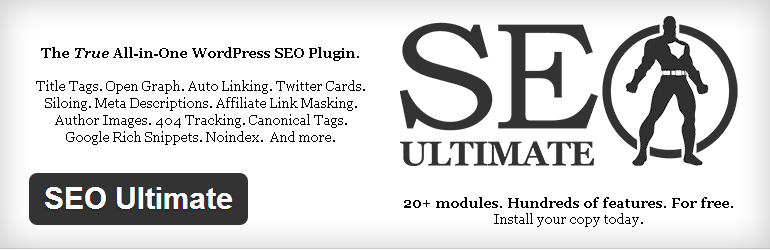
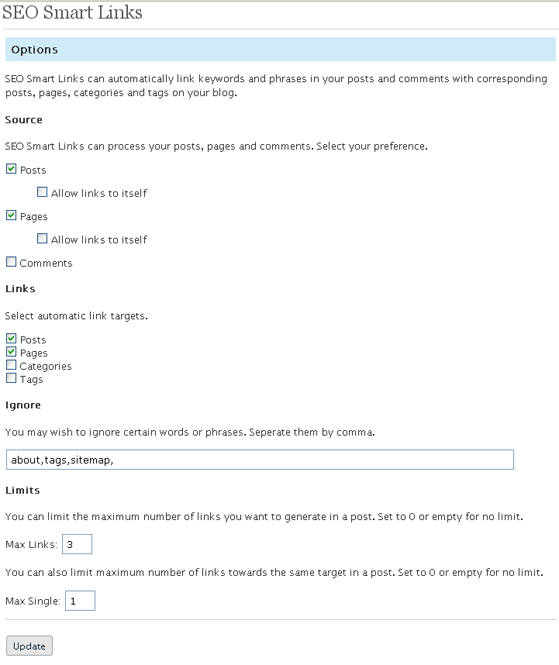
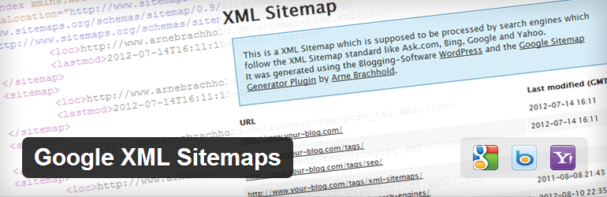

Image Credit: flickr
Every Webmaster knows that search engine optimization(SEO) is very important for a website in order to get organic traffic from search engines. Although, things can be done manually, still there are need of plugins to automate few things. In this post, we are have shared few most popular and best SEO plugins for WordPress websites.
1) SEOPressor
This is a premium plugin. All of the other plugins shared in this post are free, the reason why we included this in our list is because it’s a complete SEO plugin for a WordPress blog, you won’t be needing any other SEO plugin if you have it installed on your blog. It takes care of each and every aspect of search engine optimization.
Key Features:
- LSI keywords support
- On page SEO score for each post along with suggestions to improve the score
- Automatic internal linking
- Automatic cloaking of external links and linking to corresponding keywords
- Supports rich snippets
- Image SEO optimization
- Facebook open graph, Twitter cards, Dublin Core meta tags support
- Automatic tags generator
- Upto 3 target keyword analysis
- Post slug optimization
2) WordPress SEO by Yoast
This is one of the best SEO plugin for WordPress, which is available for free. Below are the main features of this plugin.
Key features
- Import and export functionality. This feature would be very handy if you are having multiple sites, you need to configure the plugin at one of your site and import the settings to all of the other websites.
- Breadcrumbs support
- RSS feed optimization
- XML Sitemaps
- Facebook open graph, twitter card support
- Page analysis – It analyses your content and provide you a through analysis of your content along with SEO score and suggestions to improve on page search engine optimization.
- Using this plugin, you can edit your .htaccess and robots.txt file from the WordPress dashboard itself.
3) All in One SEO Pack
Key features:
- It includes almost all the features of WordPress SEO by yoast plugin (shared above).
- Advanced Canonical URLs
- Advanced Page Navigation links
- Google analytics support
- SEO integration for WordPress e-commerce sites
4) SEO Ultimate

Key features:
- 404 Monitor – It monitors your blog for 404 (page not found) error.
- Code/ Script insertion – A panel through which you would be able to insert any code and script in the blog’s header or footer.
- Automatic internal link building – It generates automatic internal links from the post to other posts/category/tags.
- File editor – A panel using which you can edit .htaccess and robots.txt
- Meta Description editor
- Meta Keywords editor
- Meta Robot tags editor
- Nofollow Manger – Easily nofollow your category, tags, author, feed, comments, archives pages and many more.
- Rich Snippet creator
- Slug optimizer
- Title tag rewriter – It makes your titles SEO friendly automatically
- Import and Export feature
5) SEO friendly Images
One of the most downloaded and best plugin for SEO friendly images. It allows you to add title and Alt tag in images automatically based on the settings you provide in configuration page. Using this free plugin you can easily add target keyword in title and alt tag of an image. It optimize your blog completely which means you can optimize the images for already published posts and pages.
6) SEO Smart Links
You must be knowing that internal linking with right anchor text is one of most important SEO factor which improves search engine ranking. This plugin allows you to interlink your blog post automatically with the right anchor text. Refer the below setting page snapshot, you would be able to understand how easy it is to configure this plugin. It generates internal links for already published posts too. You can also interlink your category and tags pages from the post.
The main advantages of this plugin is that you can control the number of links this plugins generates, along with a limit of total maximum links a post/page can have. Read more about this plugin here.

7) Broken Link Checker
It checks your blog for broken links. Broken links are the links which doesn’t have a target page and usually returns a 404 error code. It finds out such links and stops search engines from following those links. Read more at Broken Link checker WordPress plugin.
8) Google XML Sitemaps

One of the best plugin for automatically generating sitemaps for your WordPress blog. Whenever you publish a post, this plugin updates the xml sitemap and pings search engines such as Google, Yahoo, Bing etc. It allows you to exclude certain categories from being considered in the sitemap. It also lets you change the post/page priorities and sitemap content through the configuration screen itself. Must Have plugin!!
Final Words
Did you like the list? Share your thoughts and feedback via comments. If you believe that I missed something here, feel free to share the same with others by dropping a comment below.
please define which one is best SEO plugin for wordpress blog
WordPress Yoast plugin is good for SEO. Whatever the plugin has been covered in this post are must.
I am using WordPress SEO by Yoast. Should I use All in one SEO plugin as well. Will it help?
I think SEO by Yoast is the best plugin. And thanks for the list , I’m going to try out all one by one to compare them.
Fantastic post SEO post content links does an amazing incredible job great optimizing capabilities i cant wait to try out many of this plugins. mamy thanks.